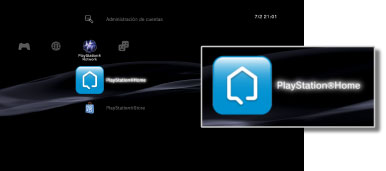

PlayStation®Network > Información general de PlayStation®Home
Información general de PlayStation®Home
PlayStation®Home es una comunidad de juegos social en 3D de PlayStation®Network que proporciona a los usuarios del sistema PS3™ la posibilidad de conocerse y de conversar con otros usuarios de sistemas PS3™. Deberá crear (registrar) una cuenta de PlayStation®Network para utilizar estas funciones. Para obtener más información acerca del uso de PlayStation®Home, visite el sitio Web de SCE de su región.
Inicio de PlayStation®Home
Para utilizar PlayStation®Home deberá, en primer lugar, descargar e instalar la aplicación PlayStation®Home. Seleccione (PlayStation®Home) en  (PlayStation®Network) para descargar la aplicación. Siga las instrucciones que aparecen en la pantalla para completar la instalación.
(PlayStation®Network) para descargar la aplicación. Siga las instrucciones que aparecen en la pantalla para completar la instalación.

Notas
- Para instalar PlayStation®Home, debe disponer como mínimo de 3 GB de espacio libre en el disco duro del sistema PS3™.
- (PlayStation®Home) solo se encuentra disponible en determinadas regiones y determinados idiomas. Además, los tipos de contenido suministrados en (PlayStation®Home) varían en función del país o la región de residencia. Para obtener más información, póngase en contacto con el servicio de atención al cliente de su región.
Salir de PlayStation®Home
Para salir de PlayStation®Home, pulse el botón PS del mando inalámbrico y, a continuación, seleccione  (Salir) en (PlayStation®Network).
(Salir) en (PlayStation®Network).
Eliminación de PlayStation®Home
La aplicación PlayStation®Home se puede eliminar del disco duro. Seleccione (PlayStation®Home) en (PlayStation®Network), pulse el botón  y, a continuación, seleccione [Eliminar] en el menú de opciones.
y, a continuación, seleccione [Eliminar] en el menú de opciones.
Nota
Aunque la aplicación se haya eliminado, el icono (PlayStation®Home) no se eliminará del menú XMB. Si selecciona el icono, se volverá a descargar la aplicación PlayStation®Home.